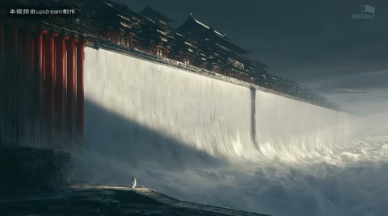
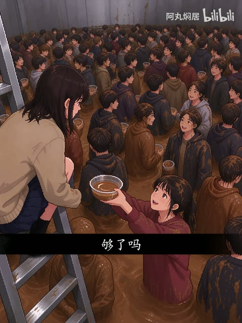

← 案例图谱AI28 / 主要视觉研究样本
巨构：玄同无待〖AI全民制作人〗
巨构AI · 229.4万播放快照 · ≥10万 · B站原作 ↗
慢并不等于没有节奏。小人物、建筑框景与云雾让观众逐层读尺度；比较不同停留会如何改变敬畏感。

约2.867秒 · 案例代表帧从画面里找依据
这一例先看什么
圆门、洞口、云上楼阁、长桥中轴、树影平墙带来框景和视点变化；红白建筑与暖冷光保持系列一致。
审美判断
红门与暖色缝光突出于冷灰云水，暗前景门框将视线引向亮宫阙；小人物清楚承担比例参照，角标非主阅读内容。
迁移到自己的题材
世界观设定、建筑概念、游戏场景、旅行氛围、神圣感、孤独感或压迫感。
教学提问：画面里有什么告诉观众“它有多大”？哪些地方值得停留，哪些重复景观可以删掉？
带画面的分析单元
图像标出取样时间，对应观察中的关键状态。单帧不能独立证明运动，连续性请结合摘录。表达作用与应用场景是教学解读，复现路线是建议，不是原作者工程还原。
分析单元 01 / 0—5.4秒
巨型圆门／尺度参照／雾与水流
实际观察
极小人物面对巨大圆门和长柱列，暖色门缘对冷灰环境；2.867转白色瀑布墙，人物仍作为比例参照。
表达作用（教学解读）
用熟悉尺寸与层次，让宏大空间被感知；留停帮助观众建立尺度。
具体应用场景
世界观、建筑概念、场景设定、神圣、敬畏、孤独和压迫。
复现建议（非原作者工程还原）
先有巨构场景图/生成视频；人物尺度、消失点和冷暖光统一；雾、水波可简化叠层，但真实水与建筑关系需素材。
直出判断：雾/调色/硬切容易，完整建筑美术与水流空间关系需生成或3D
常见误用：没有比例参照；每镜同一宏大构图；雾遮住所有结构；反射与相机运动不一致。
分析单元 02 / 5.4—15.733秒
门框借景／洞口构图／悬浮宫阙
实际观察
6–10秒从暗门框看云上红白宫门，12秒石洞围出中央楼阁，14秒长墙高角度。
表达作用（教学解读）
通过变化与稳定的比例让信息有轻重。视觉密度来自切镜、版式与局部动画三个层面，不只靠刀数。
具体应用场景
所有形式；尤其高潮前的蓄力、解释段的阅读、回忆段的停留和快慢对照。
复现建议（非原作者工程还原）
构图以暗前景框出亮主体，层次由前景/主体/云海形成；透明前景加慢推可做简化2.5D。
直出判断：有分层图后慢推容易；生成完整云上建筑不属于单纯转场
常见误用：全片等密度；把闪帧当新镜；高切速被当成质量分；没有稳定段供观众理解。
分析单元 03 / 16—31秒
水面倒影／月亮／云墙／俯瞰
实际观察
16–20秒楼阁/长墙倒影和圆月，22–24秒水墙与树，26–30秒高视点柱列云海。
表达作用（教学解读）
用熟悉尺寸与层次，让宏大空间被感知；留停帮助观众建立尺度。
具体应用场景
世界观、建筑概念、场景设定、神圣、敬畏、孤独和压迫。
复现建议（非原作者工程还原）
镜像裁切与波纹可模拟倒影，云用分层噪声位移；真实透视、建筑和反射一致性需源图/3D。
直出判断：简化倒影/云雾中等，长建筑连续细节难
常见误用：没有比例参照；每镜同一宏大构图；雾遮住所有结构；反射与相机运动不一致。
分析单元 04 / 32—46.567秒
门缝光／雾层平移／圆形框景
实际观察
32–36秒宫殿窄橙光门，38–40秒斜长墙，41.4秒硬切圆门内窄光缝；41.4后云雾缓动、人物衣摆变化，未见多次快速切镜。
表达作用（教学解读）
用熟悉尺寸与层次，让宏大空间被感知；留停帮助观众建立尺度。
具体应用场景
世界观、建筑概念、场景设定、神圣、敬畏、孤独和压迫。
复现建议（非原作者工程还原）
门缝以细条光渐变+辉光，雾层不同速度位移；角色衣摆依赖生成/源动画。
直出判断：门光和雾容易，角色一致性/建筑空间需素材
常见误用：没有比例参照；每镜同一宏大构图；雾遮住所有结构；反射与相机运动不一致。
分析单元 05 / 48—61.767秒
树影／桥轴线／片尾标志
实际观察
48秒平墙树影和小人物，52–56秒长桥中轴通向圆门，58秒柱体上小屋，60秒白色标志覆盖。
表达作用（教学解读）
用熟悉尺寸与层次，让宏大空间被感知；留停帮助观众建立尺度。
具体应用场景
世界观、建筑概念、场景设定、神圣、敬畏、孤独和压迫。
复现建议（非原作者工程还原）
树影可纹理投影/透明遮罩，桥轴线需要透视源图，标志透明度进入。
直出判断：标志和树影容易，精致透视桥与建筑需美术素材
常见误用：没有比例参照；每镜同一宏大构图；雾遮住所有结构；反射与相机运动不一致。
用连续画面核对
保留原研究的多段局部摘录。片段含音轨不代表已听审；本资料不评价音乐卡点或对白节奏。
短时变化怎样理解
2–4、10–12、40.5–44.5秒三个窗口各1次主要替换，门内光雾与人物衣摆持续不另加刀；停留适合氛围展示。
把镜头连接、版式更新、局部图层变化和镜内运动分开记录。所查窗口是下限，不是全片平均或AI／人工排名。
原始逐窗记录 →这次练习的约束
同一环境做“敬畏”和“孤独”两版，不换主体，仅改变人物比例、负空间、镜头停留和前景遮挡。
先写“我希望观众明白／感到什么”，再选本页的一种手法。完成无效果基础版后再加层；解释新增层带来的收益和代价。
打开练习与复盘表 →来源、观看范围与制作归属
实际检查范围：实际查看31张2秒概览0–60（2表），2–3.933与10–11.933共60密集帧（4表，15/s）；40.5–44.4另40帧（3表，实际10/s，标头为请求12/s）。源61.767秒1920×1074/30fps，三段4秒摘录。未听审、未连续完整音画观看。
制作线索：巨构AI，第一方229.4万、2026-08-05；含AI生成内容标签、AI活动与作者身份。片内角标写updream制作，但未公开逐镜流程，不能从成片确定模型版本或全自动剪辑。
边界：AI标识及updream角标为制作自述，未审模型版本或自动程度；树影/门光/雾可简化直出，建筑细节、水流和反射空间需素材。
播放快照保存时间（UTC）：2026-10-20T10:22:37.815598+00:00。H30制作方式为推定；同源改编、仿作和转载依原记录标注。
原始案例记录 · 选样表把你的判断留下来
笔记仅尝试保存在本机浏览器；浏览器策略可能限制本地文件存储，重要内容请导出。
沿着同一问题继续阅读
AI47细节、反应与转折
星空漂浮、舞厅、卡通群岛、玩偶舞台形成不同媒介段落；服装与双人关系作为锚点，场景丰富度不能仅归功剪辑转场。
主要样本7个分析单元
方向、冲击与节奏
怪诞感既来自材质，也来自看与被看的景别关系。脸、手、全身、眼和泪滴的转换，比单纯增加血肉细节更值得学习。
主要样本8个分析单元

AI24细节、反应与转折
超常尺度与日常火锅碰撞产生荒诞感。先读设定与反应，再看字幕、景别和产品插入如何改变叙事重心。
主要样本7个分析单元